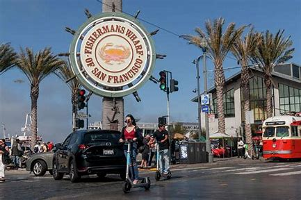
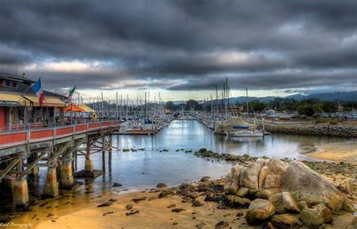
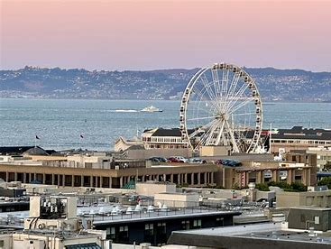
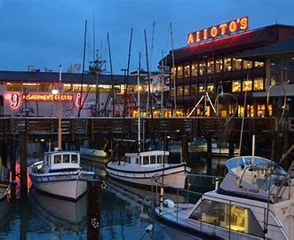
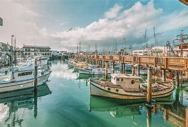

History
Fisherman's Wharf is one of San Francisco's most popular tourist attractions. It was originally the hub of the city's fishing fleet during the late 1800s and early 1900s. Today, Fisherman's Wharf is known for its historic waterfront, delicious seafood, and family-friendly attractions.
The area started as a simple dock and fish market. Over time, it grew into a bustling commercial district. The Wharf has preserved its history and remains a working fishing pier, but it also hosts numerous shops, restaurants, and museums that cater to tourists.
Visitor Information
- Hours: Open daily from 9:00 AM to 8:00 PM.
- Admission: Free to explore. Individual attractions may have their own fees.
- Facilities: Public restrooms, parking lots, and a visitor center are available.
- By Car: Accessible via US Highway 101 and State Route 1. Parking is available in nearby lots.
- Public Transportation: Easily reachable by bus, cable car, and streetcar.
Fisherman's Wharf Gallery




